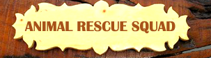

Goa's Wildlife
Wild Goa
Goa's Wildlife
Species in Threat
Activities
Raids
First Aid
Animal Rescue
Individual Role
Training Camp
Fauna in Goa
Birds of Goa
Reptiles of Goa
Mammals of Goa
Amphibians of Goa
About Us
Our Success
News Articles
Videos
Contact Us